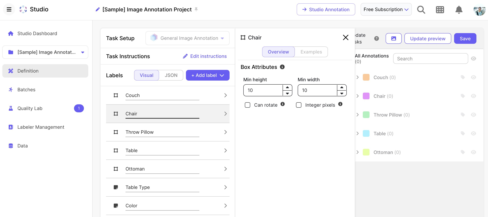

完全なAIツールエコシステム | オリジナル、AI翻訳
目次
- Jina AI
- Jina AI統合用Pythonスクリプト
r.jina.aiを使用したURLコンテンツ取得s.jina.aiを使用した検索クエリ処理- Base64エンコーディングとAPI認証
- Tavily AI
- LLMアプリケーション向けAI検索API
- セットアップとAPIキー登録
- Pythonクライアント実装
- 検索リクエスト例と使用方法
- Open WebUI
- ローカルAIインターフェースのインストール
- サーバー設定と構成
- ローカルモデルへのOllama統合
- インストール時間と要件
- Tableau、Scale、Power BI
- ビジネスインテリジェンスプラットフォーム比較
- Tableau 13日間トライアル体験
- Scaleデータプラットフォーム概要
- Microsoft Power BIの機能
- OpenRouterの使用
- 中国発行Visaカードの利用可否
- モデルランキングとトレンド分析
- LLM利用カテゴリーとアプリケーション
- Anthropic API利用における香港VPN要件
- ElevenLabs AI
- テキスト音声変換API統合
- 音声クローン機能
- 多言語音声生成
- 音声変換用Pythonスクリプト
Jina AI
このPythonスクリプトは、APIキーとコマンドライン引数を使用してJina AIサービスと連携します。主に2つの機能をサポートしています: URLからのコンテンツ取得と検索クエリの実行です。スクリプトは環境変数からJina APIキーを取得し、サービスへの安全なアクセスを確保します。HTTPリクエストにはrequestsライブラリを、検索クエリのデコードにはbase64を使用します。その後、Jina AIサービスからの応答を出力します。
import os
import requests
from dotenv import load_dotenv
import argparse
import base64
load_dotenv()
api_key = os.environ.get("JINA_API_KEY")
if not api_key:
raise ValueError("JINA_API_KEY環境変数が設定されていません。")
parser = argparse.ArgumentParser()
parser.add_argument("--job", type=str, choices=['url', 'search'], help="実行するジョブ(urlまたはsearch)", required=True)
parser.add_argument("--input", type=str, help="ジョブの入力", required=True)
args = parser.parse_args()
if args.job == 'url':
url = f'https://r.jina.ai/{args.input}'
headers = {'Authorization': f'Bearer {api_key}'}
print(f"URL: {url}")
print(f"Headers: {headers}")
response = requests.get(url, headers=headers)
print(response.text)
elif args.job == 'search':
question = base64.b64decode(args.input).decode('utf-8', errors='ignore')
url = f'https://s.jina.ai/{question}'
headers = {
'Authorization': f'Bearer {api_key}',
'X-Engine': 'direct',
'X-Retain-Images': 'none'
}
print(f"URL: {url}")
print(f"Headers: {headers}")
response = requests.get(url, headers=headers)
print(response.text)
else:
print("--job urlまたは--job searchを指定してください")
Tavily AI
TavilyはLLMアプリケーション向けに設計されたAI検索APIです。ウェブ検索とAI処理を組み合わせることで、高度に関連性の高い検索結果を提供します。
Tavilyを使用するには:
- tavily.comでAPIキーに登録
- Pythonパッケージをインストール
import os
from tavily import TavilyClient
# 環境変数からAPIキーを取得
TAVILY_API_KEY = os.getenv('TAVILY_API_KEY')
if TAVILY_API_KEY is None:
raise ValueError("APIキーが見つかりません。TAVILY_API_KEY環境変数を設定してください。")
# 取得したAPIキーでTavilyClientを初期化
tavily_client = TavilyClient(api_key=TAVILY_API_KEY)
# 検索リクエストを実行
response = tavily_client.search("レオ・メッシとは誰ですか？")
# 応答を表示
print(response)
Open WebUI
-
Open WebUIは優れたツールです。
-
サーバーを起動するには、以下のコマンドを実行します:
pip install open-webuiとopen-webui serve。 -
インストールには時間がかかる場合があります（約10分以上）。
-
Open WebUIはOllamaとよく連携します。
Tableau、Scale、Power BI
Tableau
登録後、13日間の試用期間があると通知されました。
出典: tableau.com
Scale
 出典: scale.com
Power BI
OpenRouterの使用
-
中国発行のVisaクレジットカードが利用可能です。
-
ランキングページでは人気やトレンドのモデルを確認できます。
-
ロールプレイ、プログラミング、マーケティング、マーケティング/SEO、テクノロジーなどのカテゴリーでLLMモデルの利用方法を確認できます。
-
香港のユーザーは、Anthropic APIにアクセスするためにVPNがまだ必要です。
ElevenLabs AI
import os
import requests
from dotenv import load_dotenv
import argparse
import re
load_dotenv()
api_key = os.environ.get("ELEVENLABS_API_KEY")
if not api_key:
raise ValueError("ELEVENLABS_API_KEY環境変数が設定されていません。")
parser = argparse.ArgumentParser()
parser.add_argument("--file", type=str, help="音声変換用マークダウンファイル", required=False)
parser.add_argument("--text", type=str, help="音声変換用テキスト", required=False)
parser.add_argument("--output", type=str, help="出力ファイル名", required=True)
parser.add_argument("--voice_id", type=str, default="21m00Tcm4TlvDq8iK2G8", help="使用する音声ID")
args = parser.parse_args()
if args.file:
try:
with open(args.file, 'r') as f:
content = f.read()
# フロントマターを削除
content = re.sub(r'---.*?---', '', content, flags=re.DOTALL)
text = content.strip()
except FileNotFoundError:
print(f"エラー: ファイルが見つかりません: {args.file}")
exit(1)
except Exception as e:
print(f"ファイル読み込みエラー: {e}")
exit(1)
elif args.text:
text = args.text
else:
print("エラー: --fileまたは--textを指定する必要があります。")
exit(1)
url = f"https://api.elevenlabs.io/v1/text-to-speech/{args.voice_id}"
headers = {
"Accept": "audio/mpeg",
"Content-Type": "application/json",
"xi-api-key": api_key
}
data = {
"text": text,
"model_id": "eleven_flash_v2_5",
"voice_settings": {
"stability": 0.5,
"similarity_boost": 0.5
}
}
response = requests.post(url, json=data, headers=headers)
if response.status_code == 200:
with open(args.output, 'wb') as f:
f.write(response.content)
print(f"音声ファイルを保存しました: {args.output}")
else:
print(f"エラー: {response.status_code} - {response.text}")